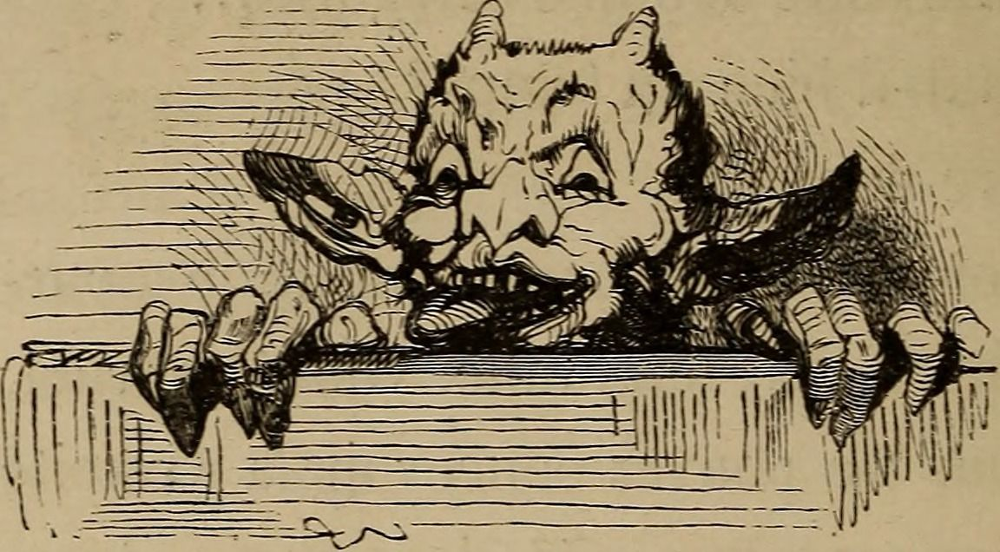
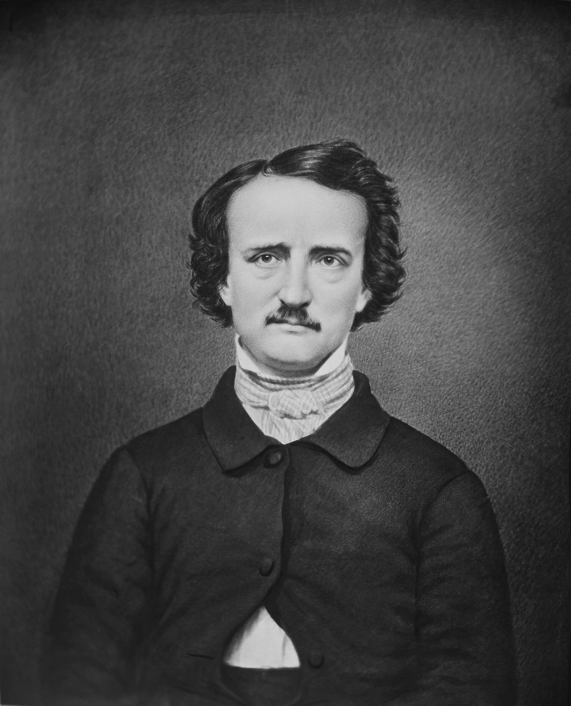

Cet essai a d’abord paru en turc. La version française est de ma main. Les séminaires de Lacan et les Écrits sont cités dans l’original français. Les textes de Freud sont cités sous leurs titres français usuels, avec l’année de première publication.

.jpg){kind=link}
Che vuoi ?
Jacques Cazotte, Le Diable amoureux (1772)
Le désir de l’homme est le désir de l’Autre.
Jacques Lacan
I
Si le concept de grand Autre a un lieu de naissance, c’est une petite salle de cours de l’École pratique des hautes études, dans le Paris des années 1930. De 1933 à 1939, le philosophe d’origine russe Alexandre Kojève y donna des cours sur la Phénoménologie de l’esprit de Hegel, et parmi ses auditeurs figuraient des noms qui orienteraient plus tard la pensée française du vingtième siècle : Georges Bataille, Raymond Queneau, Maurice Merleau-Ponty, Raymond Aron et un jeune psychiatre, Jacques Lacan. Au centre de la lecture de Hegel par Kojève se tiennent la dialectique du maître et de l’esclave et une thèse : le désir humain, à la différence du besoin animal, ne se dirige pas vers un objet, mais vers un autre désir ; l’homme désire le désir de l’autre, c’est-à-dire qu’il désire être reconnu.1
Lacan n’abandonna jamais cette thèse ; mais il la transforma à la racine. Chez Kojève, la reconnaissance se joue entre deux consciences, dans une rencontre qui peut aller jusqu’à la lutte à mort. À partir du début des années 1950, Lacan s’efforce de montrer que cette rencontre entre deux sujets a toujours lieu à l’intérieur d’un troisième lieu : le langage et la loi. Deux personnes ne peuvent s’adresser l’une à l’autre qu’au sein d’une langue, et cette langue existait avant elles deux et se trouve hors de l’une et de l’autre. Le grand Autre est le nom de ce troisième lieu.
Le concept a une autre racine, plus ancienne, chez Freud lui-même. Dans L’Interprétation du rêve, Freud rapporte une idée de Gustav Theodor Fechner, le fondateur de la psychophysique du dix-neuvième siècle : la scène des rêves est autre que celle de la vie représentative de l’état de veille. Pour Fechner, l’étrangeté du rêve ne s’explique pas comme une simple forme affaiblie de la pensée éveillée ; le rêve se joue ailleurs, selon d’autres règles.2 Freud emploie cette « autre scène », en allemand andere Schauplatz, pour le lieu de l’inconscient. Lacan la rappelle souvent lorsqu’il parle du grand Autre : à côté de la parole consciente du sujet, l’inconscient est une autre scène où le sujet parle à son insu. Chaque phrase que dit le sujet se joue sur deux scènes à la fois : sur l’une, elle raconte quelque chose ; sur l’autre, à son insu, elle dit tout autre chose. Un lapsus, un oubli, un rêve, un mot qui, un instant, se déplace, sont les moments où les deux scènes se touchent.
II
Le premier pas pour comprendre le concept est une distinction que Lacan fait explicitement vers 1955. Le petit autre, en français autre, noté a en abrégé, est l’autre personne que le sujet voit comme semblable à lui, dérivée de l’image du miroir. Cette relation appartient à l’ordre imaginaire : l’admiration, l’identification, la jalousie et la rivalité fonctionnent le long de cet axe. Dans le stade du miroir, l’enfant reconnaît sa propre image dans le corps d’un autre, et cette reconnaissance est en même temps une aliénation. Le grand Autre, Autre, noté A en abrégé, n’est pas un semblable ; il n’entre pas avec le sujet dans une relation symétrique. C’est l’ordre du langage et de la loi dans lequel le sujet se trouve, qui existait avant lui et le détermine. Avant sa naissance, l’enfant a été nommé, on a parlé de lui, on l’a placé dans une généalogie, une histoire familiale, un désir. Cet ordre est symbolique, et le grand Autre est la face de cet ordre qui se tourne vers le sujet.
Le premier grand Autre que le sujet rencontre est une personne concrète : celle qui s’occupe du nourrisson, entend son cri et lui donne un sens, le plus souvent la mère. Le cri du nourrisson ne dit rien de lui-même ; on ne sait pas s’il s’agit de la faim, de la douleur ou de la solitude. Quand la mère répond au cri, elle l’interprète comme une demande : « Tu as faim ? », « Tu as froid ? », « C’est moi que tu veux ? » La voix du bébé acquiert rétroactivement un sens avec la réponse de la mère. Lacan exprime cette structure dans une formule qu’il dit tenir d’une conversation avec Lévi-Strauss : l’émetteur reçoit son propre message du récepteur sous une forme inversée.3 Celui qui parle n’apprend ce qu’il a dit que par la réponse qui lui revient de son interlocuteur. Cela ne vaut pas seulement pour la petite enfance. Dans l’analyse aussi, l’analysant entend pour la première fois le sens de sa propre parole par l’analyste qui répète un mot, par une ponctuation, par un silence.
Lacan formule cette distinction dans son deuxième séminaire, en 1954–1955, par un schéma appelé schéma L. Aux quatre coins du schéma figurent le sujet, le moi, le semblable qui est l’image du moi, et le grand Autre. L’axe entre le moi et son semblable montre la relation imaginaire ; l’axe qui va du grand Autre au sujet est celui de l’inconscient, de la parole que le sujet ignore sur lui-même. Ce que le schéma enseigne, c’est que la parole venue du grand Autre n’atteint pas directement le sujet ; elle est coupée, déviée par l’axe imaginaire.4 Les images dans lesquelles le moi se reconnaît portent et voilent à la fois la vérité du sujet. La formule que Lacan répète souvent à cette époque est l’essence du schéma : l’inconscient, c’est le discours de l’Autre. L’inconscient n’est pas une essence cachée à l’intérieur de l’individu ; il vient du dehors du sujet, de la parole de la langue et de l’histoire familiale. Un deuil que les parents n’ont pas mis en mots, un secret transmis de génération en génération dans une famille, une attente portée sur le nom d’un enfant sont des exemples du discours de l’Autre qui façonne l’inconscient du sujet.
La fonction du grand Autre à l’intérieur de la parole, Lacan la montre, dans son séminaire de l’année suivante, par une subtile différence grammaticale que le français offre. Il compare deux phrases : Tu es celui qui me suivras et Tu es celui qui me suivra. Les deux signifient « Tu es celui qui me suivra » ; mais dans la première le verbe est conjugué à la deuxième personne du singulier, dans la seconde à la troisième. La seconde phrase est un constat, peut-être une prophétie : le locuteur sait ou devine que l’autre le suivra. La première est une interpellation, une assignation, un engagement : le verbe s’adresse directement à l’autre et l’invite à accepter ou à refuser cette parole.5 L’intuition est familière. Une femme qui dit « Tu es mon mari » ne transmet pas une information ; elle place l’autre quelque part, et par ce placement se lie elle-même quelque part. Pour Lacan, de telles paroles prennent effet non entre les deux personnes, mais dans un troisième lieu qu’elles appellent toutes deux en témoin : le grand Autre. Un serment, un mariage, une promesse, même faits entre deux personnes seules, s’adressent à un témoin, à une loi, à une langue.
Cette place du grand Autre dans la parole apparaît aussi dans une vieille énigme logique que Lacan reprend dans son séminaire de 1964 : le paradoxe du menteur. Celui qui dit « Je mens » dit-il vrai ou ment-il ? S’il dit vrai, il ment ; s’il ment, il dit vrai. Pour Lacan, le paradoxe naît seulement si l’on confond deux niveaux : le sujet de la phrase prononcée et le sujet qui la prononce, les niveaux de l’énoncé et de l’énonciation. Celui qui dit « Je mens » apparaît, dans ce qu’il dit, comme quelqu’un qui ment ; mais au niveau de l’énonciation, il nous transmet une vérité.6 Lacan pense cette distinction dans la clinique à partir d’un moment où un analysant dit « Je vous trompe ». L’analyste entend la phrase non au niveau du contenu dit, mais à celui du dire, et peut lui rendre son message inversé : en me disant que vous me trompez, vous me dites la vérité. Le grand Autre est le lieu où ces deux niveaux se séparent, où le sens de la phrase que le locuteur ignore peut s’entendre.
III
Pour montrer comment le grand Autre fonctionne, Lacan se tourne, de façon inattendue, vers un récit policier. Dans La Lettre volée d’Edgar Allan Poe, publiée en 1844, la reine lit dans le boudoir royal une lettre que le roi ne doit pas connaître lorsque le roi entre. Au lieu de cacher la lettre, elle la laisse ouverte sur la table, car chercher à la cacher attirerait l’attention. Le ministre qui entre à ce moment saisit la situation d’un coup d’œil, tire de sa poche une lettre semblable, l’échange contre la sienne et emporte la lettre sous les yeux de la reine, qui, il le sait, ne peut rien faire à cause de la présence du roi. La police fouille la maison du ministre pendant des mois, centimètre par centimètre, mais ne trouve pas la lettre. Le détective Dupin la trouve dès sa première visite, dans un porte-cartes, à l’endroit le plus voyant, froissée et retournée ; à sa visite suivante, il la remplace par un fac-similé de sa fabrication.
L’échec de la police est le premier indice de l’interprétation de Lacan. La police cherche la lettre comme un objet : elle creuse les pieds des tables, arrache les reliures des livres, examine au microscope les interstices du parquet. Pour la police, ce qui est caché est ce qui a été mis quelque part dans l’espace, dissimulé dans un étui, une cavité. Lacan montre l’angle mort de cette logique par une analogie de bibliothèque : quand un livre est perdu dans une bibliothèque, la fiche du catalogue note qu’il est « absent de sa place » ; or le livre est peut-être sur le rayon voisin. Pour Lacan, « ne peut être caché que ce qui manque à sa place ».7 La lettre n’est pas un objet, mais un signifiant ; et un signifiant peut rester caché même à l’endroit le plus voyant. Le succès de Dupin vient de ce qu’il pense non pas à l’endroit où la lettre est cachée, mais à la circulation dans laquelle elle se trouve prise.

.jpg){kind=link}
Dans le séminaire qu’il consacre à cette nouvelle en 1955, Lacan parvient à une interprétation qui deviendra le texte d’ouverture des Écrits : le vrai sujet de l’histoire est la lettre elle-même. Le lecteur n’apprend jamais le contenu de la lettre ; mais, à mesure qu’elle change de mains, elle détermine la position de qui la détient. Celui qui a la lettre tombe dans la position de la reine, c’est-à-dire celle de qui voit sans être vu mais ne voit pas qu’il est vu ; le ministre, puis Dupin, s’installent dans la même structure à l’instant où ils s’en emparent.8 Ce que Lacan montre, c’est que le signifiant, la plus petite unité du langage, peut déterminer la place, l’action et le destin des sujets indépendamment de leur volonté. Le grand Autre est le lieu où cette circulation a lieu. La dernière phrase du texte deviendra l’une des plus citées de Lacan : une lettre arrive toujours à destination.
La fin de l’histoire tient une place à part dans la lecture de Lacan. Dans la fausse lettre qu’il laisse à la place de celle qu’il a prise chez le ministre, Dupin écrit quelque chose qu’il sait que le ministre reconnaîtra à son écriture : deux vers de la tragédie Atrée et Thyeste de Crébillon, auteur dramatique français du dix-huitième siècle. Un dessein si funeste, / S’il n’est digne d’Atrée, est digne de Thyeste.9 Dupin pense s’être emparé de la lettre en détective de sang-froid ; mais à l’instant même où il met le substitut à sa place, il laisse une signature de vengeance, trahit sa colère. Lacan y lit la preuve ultime que la circulation de la lettre attire dans sa structure quiconque la détient. Celui qui tient la lettre, si intelligent soit-il, prend la position de la lettre, celle d’un porteur de secret, de passion, de dette. Dupin sort de l’histoire non comme celui qui la termine, mais comme la prochaine étape de la lettre.
IV
La formule que Lacan reprend de Kojève acquiert dans ses mains un sens nouveau : le désir de l’homme est le désir de l’Autre. L’ambiguïté du génitif français est ici une richesse, et la phrase doit se lire d’au moins deux manières. D’abord, le sujet désire ce que l’Autre désire : les objets de notre désir sont ceux que valorisent et désirent notre entourage, notre culture, notre famille. Ensuite, et plus fondamentalement, le sujet désire être désiré par l’Autre : il veut être l’objet du désir de l’Autre, être quelque chose pour lui.
Cela place le sujet devant une question inévitable, et Lacan lui donne, dans son texte Subversion du sujet et dialectique du désir dans l’inconscient freudien, présenté à Royaumont en 1960, un nom emprunté au dix-huitième siècle. Dans le roman fantastique de Jacques Cazotte Le Diable amoureux, publié en 1772, le jeune officier espagnol Alvare, sur l’incitation d’un ami, invoque le diable dans les ruines de Portici, près de Naples. À une fenêtre apparaît une monstrueuse tête de chameau aux oreilles énormes, qui pose d’une voix de tonnerre une seule question : Che vuoi ?, « Que veux-tu ? »10 Dans le graphe du désir de Lacan, cette question revient au sujet depuis le lieu où il attend une réponse de l’Autre, et lui montre le chemin de son propre désir.11 La question s’entend en fait ainsi : que veux-tu de moi ? Que suis-je pour toi ?
La forme la plus intense de cette question en littérature est une courte parabole que Franz Kafka publia en 1915, « Devant la loi ». Un homme de la campagne veut entrer dans la Loi ; mais un gardien se tient devant la porte et lui dit qu’il ne peut entrer maintenant. La porte est ouverte, le gardien s’écarte, l’homme regarde à l’intérieur. Le gardien rit : si tu en as tant envie, essaie d’entrer malgré mon interdiction ; mais je suis puissant, et je ne suis que le dernier des gardiens ; à l’intérieur, de salle en salle, il y a des gardiens plus puissants que moi. L’homme décide d’attendre. Pendant des années, il s’assied devant la porte, supplie le gardien, le soudoie, va jusqu’à implorer les puces du col de fourrure du gardien de l’aider. Sur son lit de mort, il pose une dernière question : puisque tous aspirent à la Loi, comment se fait-il que pendant toutes ces années nul autre que moi n’ait demandé à entrer ? Le gardien, voyant que la fin de l’homme est proche, lui hurle à l’oreille qui s’éteint : nul autre que toi ne pouvait être admis ici, car cette entrée n’était faite que pour toi. Maintenant, je vais la fermer.12 L’inquiétante étrangeté de la parabole tient à ce que ce que la Loi, c’est-à-dire le grand Autre, veut de l’homme n’est jamais dit. La porte est ouverte, l’interdiction est moins une loi qu’un ajournement, et l’on ne sait pas ce qu’il y a derrière le gardien. L’homme passe toute sa vie à tenter de déchiffrer le désir de l’Autre, à attendre sa permission. Que la porte n’ait été faite que pour lui, que la question la plus singulière du désir ait été précisément la sienne, ne s’entend qu’à la fin, quand la porte se ferme.
Le fantasme du sujet est une réponse inconsciente à cette question. Le fantasme construit un scénario sur ce que veut l’Autre et sur la place que le sujet occupe dans son désir, et jette ainsi un pont sur l’abîme que la question ouvre. Là où la question reste sans réponse et où le fantasme cesse de fonctionner, l’angoisse paraît. Que Lacan relie, dans le dixième séminaire, l’angoisse à l’incertitude éprouvée devant le désir de l’Autre est une conséquence directe de cette structure.
V
Pendant un temps, Lacan tenta de fonder la consistance de l’Autre sur un signifiant. Dans le long texte sur le traitement de la psychose qu’il écrivit en 1958, il définit le Nom-du-Père comme le signifiant de la place du signifiant dans l’Autre, le signifiant qui désigne l’Autre comme lieu de la loi.13 Le Nom-du-Père était, en ce sens, le signifiant qui donnait au langage, à l’intérieur du langage, une loi, un fondement, une garantie. La psychose était la structure où ce signifiant est forclos, le langage laissé sans garantie, le sens glissant sans ses points de capiton. Mais cette solution ne dura pas. Le tournant de l’enseignement de Lacan à la fin des années 1950 est la découverte que le grand Autre est lui-même manquant. Si le grand Autre était le garant du sens, il faudrait un autre Autre pour le garantir, et encore un autre pour celui-là. Dans Subversion du sujet, Lacan coupe ce regrès infini d’un seul principe : il n’y a pas d’Autre de l’Autre. Le langage ne peut se fonder lui-même ; hors de tout discours, il n’y a pas de dernier mot qui garantirait la vérité de ce discours. Au niveau supérieur du graphe du désir, Lacan écrit ce manque d’une lettre barrée : le signifiant du manque dans l’Autre. La division du sujet correspond à ce manque dans l’Autre.
Le pendant de cette thèse dans l’histoire de la philosophie est le Dieu non trompeur de Descartes. Dans les Méditations, publiées en 1641, Descartes va jusqu’à un point où il peut douter de tout ; peut-être un malin génie le trompe-t-il sans cesse. De ce doute il sort avec la certitude de sa propre existence comme chose pensante ; mais pour garantir la vérité du monde extérieur et des idées claires et distinctes, il lui faut un Dieu, un Dieu qui, parce qu’il est parfait, ne trompe pas.14 Aux yeux de Lacan, ce Dieu est la forme la plus pure du grand Autre en philosophie : garant de la vérité, dernier mot. Une autre phrase que Lacan rappelle souvent exprime la même garantie pour la science. Einstein disait que Dieu est subtil, mais pas malveillant : la nature ne livre pas facilement ses secrets, mais elle ne nous trompe pas à dessein. La découverte de la psychanalyse est que l’Autre qui fait face au sujet ne peut jamais donner entièrement une telle garantie. L’Autre n’est pas malveillant ; mais il est manquant, inconsistant, et ne connaît pas sa propre vérité.
Ce constat a non seulement une portée théorique, mais aussi une profonde conséquence éthique. Le sujet ne peut pas échapper à la responsabilité de son propre désir en s’appuyant sur un Autre complet, une autorité omnisciente, un parent sans défaut, une vérité ultime. La formule que Lacan affinera dans les années suivantes, « l’Autre n’existe pas », est le point où aboutit cette pensée.15 Cela ne veut pas dire que le langage et la loi ont disparu ; cela veut dire qu’ils ne peuvent jamais s’achever, qu’ils portent toujours un manque.
VI
Les structures cliniques peuvent se lire comme des formes différentes du rapport du sujet au grand Autre. Dans la névrose obsessionnelle, le sujet tente d’ignorer le désir de l’Autre ou de le tenir sous contrôle ; derrière les règles, les listes et les rituels se tient l’angoisse de rencontrer le désir de l’Autre. Dans l’hystérie, le sujet interroge le désir de l’Autre, provoque son manque, s’offre comme l’objet qui le comble, ou fuit cette position au dernier moment. Un rêve que Freud rapporte dans L’Interprétation du rêve rassemble cette structure en une petite scène. Une patiente que Freud appelle « la spirituelle femme du boucher » rêve qu’elle veut donner un dîner, mais qu’elle n’a chez elle qu’un peu de saumon fumé, et qu’elle veut faire des courses, mais que toutes les boutiques sont fermées parce que c’est dimanche après-midi. Elle ne peut donner le dîner. Dans l’interprétation de Freud, le rêve déjoue le désir d’une amie, une femme que son mari admire mais qui est trop mince, d’être invitée à dîner et de grossir. Mais le rêve a une couche plus profonde : dans la vie réelle, la patiente adore le caviar, mais n’avait pas demandé à son mari de lui en acheter chaque jour, laissant sciemment ce désir insatisfait.16 Dans la lecture de Lacan, le sujet hystérique craint qu’un désir satisfait mette aussi fin au désir de l’Autre ; elle veut que le désir reste insatisfait, que le manque dans l’Autre reste ouvert. Dans la psychose, en revanche, l’Autre peut apparaître non avec son manque, mais dans une plénitude menaçante : un Autre qui observe le sujet, lui parle, lui demande quelque chose, ne lui laisse aucune distance.
Le rapport de la névrose obsessionnelle à l’Autre apparaît avec une clarté extraordinaire dans le cas de l’Homme aux rats que Freud publia en 1909. Le patient, écrit Freud, est un jeune homme de vingt-neuf ans, qui a fait des études de droit. Pendant des manœuvres militaires, un capitaine connu pour sa cruauté lui a raconté un supplice qu’on dit pratiqué en Orient, décrivant des rats placés dans un pot et pénétrant dans le corps du condamné. À partir de ce moment, le patient s’est mis à lutter avec l’idée que ce supplice serait infligé à la femme qu’il aime et à son père.17 Chose étrange, son père était mort depuis des années. Ce que l’on craint, c’est le châtiment d’un père mort. Les pensées obsédantes, les rituels élaborés, les serments faits à soi-même et la peur de les rompre organisent la vie du patient autour d’une dette impossible à payer.
Lacan relit ce cas à de nombreuses reprises et définit la structure de la névrose obsessionnelle comme une dévotion à un maître, à un Autre, mort ou dont on attend la mort. Pour ne pas rencontrer le désir de l’Autre, le sujet obsessionnel tente de le surveiller sans cesse, de poser des règles à sa place, de payer sa dette et de clore le compte ; mais le compte ne se clôt jamais. Que l’Autre soit mort n’abolit pas son désir ; il le fixe au contraire comme un commandement qui ne pourra plus jamais être modifié. L’attente de l’obsessionnel est, selon l’expression de Lacan, une attente de la mort du maître : il pense que, quand le maître mourra, il commencera à vivre, mais quand il mourra, il ne commencera pas non plus à vivre.
Dans la situation analytique, l’analyste est de temps à autre mis par l’analysant à la place du grand Autre : quelqu’un dont on croit qu’il sait, qu’il juge, qu’il attend quelque chose. Ce placement est le fondement du transfert. Mais la tâche de l’analyste n’est pas de remplir cette place ; c’est de la laisser vide, donnant à l’analysant la chance de rencontrer sa propre question. Dans le texte qu’il écrivit en 1958 sur la direction de la cure, Lacan décrit la position de l’analyste par une analogie tirée du jeu de bridge : l’analyste doit prendre la place du « mort », qui étale ses cartes face visible sur la table et laisse le jeu à son partenaire. Au bridge, le mort est le joueur qui étale sa main et laisse jouer son partenaire ; l’analyste de même retire du jeu ses propres sentiments, jugements et préférences, ouvrant ainsi une place où l’analysant puisse voir ses propres cartes, c’est-à-dire son propre désir.18 L’analysant ne peut entendre son propre désir que si l’analyste n’apporte pas à ce jeu son propre désir, ses approbations et ses conseils.
Aujourd’hui, dans un monde où les autorités traditionnelles se sont affaiblies et où les grands récits ont perdu leur crédibilité, le concept de grand Autre est peut-être plus riche à penser que jamais. Le titre d’un séminaire donné au milieu des années 1990 par Jacques-Alain Miller et Éric Laurent résume cette situation : L’Autre qui n’existe pas et ses comités d’éthique. Là où l’on ne croit plus à la consistance de l’Autre, d’innombrables petites instances, experts, comités et écrans apparaissent pour remplir sa place. Slavoj Žižek aime expliquer ce fonctionnement du grand Autre dans la vie quotidienne par les rires préenregistrés des séries télévisées. Le rire enregistré qu’on entend derrière une scène rit à la place du spectateur ; même si le spectateur ne rit pas lui-même, la scène a été enregistrée et certifiée drôle. Pour Žižek, ce petit dispositif montre sans défaut la structure du grand Autre : un lieu qui croit pour nous, ressent pour nous, sait pour nous.19 Aujourd’hui, ce lieu est dispersé sur d’innombrables regards derrière un écran. Un nouvel Autre sans nom propre s’y est ajouté : les systèmes de recommandation qui savent avant nous ce que nous allons regarder, lire, acheter, qui nous allons rencontrer. Le diable de Cazotte demandait « Que veux-tu ? », et cette question, si effrayante fût-elle, laissait au sujet la chance de s’interroger sur son propre désir. Le nouvel Autre ne demande pas ; il donne la réponse avant que la question soit posée. Le sujet, sans savoir ce qu’il veut, se met à vouloir ce qui lui est offert. Le regard sans fin des réseaux sociaux est la forme la plus familière de ce nouvel Autre : derrière chaque publication, on entend un écho numérique de la question « Que veux-tu de moi ? Que suis-je pour toi ? » La réponse que la psychanalyse propose à cette question n’a pas changé : au lieu de tenter de déchiffrer le désir de l’Autre, assumer la question de notre propre désir.
Notes
- A. Kojève, Introduction à la lecture de Hegel, Paris, Gallimard, 1947. Le livre est composé des notes de cours rassemblées par Raymond Queneau. ↩︎
- S. Freud, L’Interprétation du rêve (1900), chapitres I et VII (allemand : Die Traumdeutung, Gesammelte Werke II–III). L’expression que Freud cite vient des Elemente der Psychophysik de Fechner (1860) : der Schauplatz der Träume, la scène des rêves, est autre que celle de la vie représentative de l’état de veille. ↩︎
- La formule revient souvent dans les textes de Lacan des années 1950 ; par exemple « Fonction et champ de la parole et du langage en psychanalyse » (1953), in Écrits, Paris, Seuil, 1966. Dans le graphe du désir, Lacan note s(A) le sens qui vient de l’Autre : la signification de l’Autre. ↩︎
- J. Lacan, Le Séminaire, livre II : Le moi dans la théorie de Freud et dans la technique de la psychanalyse (1954–1955), Paris, Seuil, 1978 ; le schéma figure aussi dans « Le séminaire sur “La Lettre volée” », in Écrits (1966). ↩︎
- J. Lacan, Le Séminaire, livre III : Les psychoses (1955–1956), Paris, Seuil, 1981. Lacan se sert de cette différence pour ouvrir la notion de « parole pleine » : la parole du sujet ne transmet pas seulement une information à l’autre, elle le place dans une position, et lie ainsi le locuteur à une position. ↩︎
- J. Lacan, Le Séminaire, livre XI : Les quatre concepts fondamentaux de la psychanalyse (1964), Paris, Seuil, 1973, chapitre « Analyse et vérité ». Au même endroit, Lacan envisage la phrase « Je te trompe » et dit que l’analyste peut l’entendre d’une place qui rend à l’analysant son propre message sous son sens vrai : en disant « Je te trompe », ce que tu m’envoies, c’est que tu dis la vérité. Je paraphrase. ↩︎
- Lacan, « Le séminaire sur “La Lettre volée” », in Écrits. Par cette phrase Lacan distingue un objet réel d’un signifiant : le réel est toujours à sa place, on l’emporte avec soi, aussi loin qu’on le déplace ; seul un signifiant peut manquer à sa place. ↩︎
- J. Lacan, « Le séminaire sur “La Lettre volée” » (1955), in Écrits, p. 11–61. Jacques Derrida répondit à cette lecture en 1975 par une longue critique, « Le facteur de la vérité ». ↩︎
- E. A. Poe, « La Lettre volée » (1844). Dupin explique qu’il a écrit ces vers en retour d’un mauvais tour que le ministre lui avait joué un jour à Vienne. Atrée et Thyeste sont deux frères qui se préparent l’un à l’autre de terribles vengeances ; Atrée fait manger à son frère Thyeste la chair de ses propres enfants. ↩︎
- J. Cazotte, Le Diable amoureux (1772). Le diable se change ensuite en chien, puis en une jeune femme nommée Biondetta. ↩︎
- J. Lacan, « Subversion du sujet et dialectique du désir dans l’inconscient freudien » (1960), in Écrits, p. 793–827. ↩︎
- F. Kafka, « Vor dem Gesetz » (1915), paru d’abord dans l’hebdomadaire juif de Prague Selbstwehr ; repris ensuite dans le recueil Ein Landarzt (1919), et raconté de nouveau par un prêtre dans le chapitre « Dans la cathédrale » du Procès. ↩︎
- J. Lacan, « D’une question préliminaire à tout traitement possible de la psychose » (1958), in Écrits, Paris, Seuil, 1966. Dans cette définition, le Nom-du-Père fonctionne comme une sorte de signifiant-maître, l’Autre de l’Autre, par lequel la langue se garantit par la loi. ↩︎
- R. Descartes, Meditationes de prima philosophia (1641), première et troisième méditations. Sur le rapport de Lacan à Descartes, voir en particulier « La science et la vérité » (1965), in Écrits, Paris, Seuil, 1966. ↩︎
- Lacan développe sa pensée dans cette direction surtout dans le séminaire D’un Autre à l’autre (1968–1969), à travers l’inconsistance de l’Autre. L’expression « l’Autre n’existe pas » s’est répandue dans la littérature lacanienne en grande partie par le titre du séminaire de J.-A. Miller et É. Laurent que je mentionne plus bas. ↩︎
- S. Freud, L’Interprétation du rêve (1900), chapitre IV. Lacan relit longuement le rêve dans « La direction de la cure » (1958), interprétant le désir de la patiente d’un désir insatisfait comme la manière dont le sujet hystérique maintient en vie le désir de l’Autre. ↩︎
- S. Freud, « Remarques sur un cas de névrose obsessionnelle (L’Homme aux rats) » (1909), in Cinq psychanalyses. Une partie des notes de cas de Freud a été retrouvée et publiée par la suite ; elle donne du déroulement du traitement un tableau plus détaillé que le texte publié. ↩︎
- J. Lacan, « La direction de la cure et les principes de son pouvoir » (1958), in Écrits, p. 585–645. ↩︎
- S. Žižek, The Plague of Fantasies, Londres, Verso, 1997 ; How to Read Lacan, Londres, Granta, 2006. Žižek rapproche cette structure du concept d’« interpassivité » (Interpassivität) proposé dans les années 1990 par le philosophe autrichien Robert Pfaller : faire éprouver un sentiment en notre nom à un autre, à un objet ou à un dispositif. ↩︎
Bibliographie
- Cazotte, J. (1772). Le Diable amoureux.
- Derrida, J. (1975). Le facteur de la vérité. Poétique, 21.
- Descartes, R. (1641). Meditationes de prima philosophia. Soly.
- Freud, S. (1900). L’Interprétation du rêve. PUF.
- Freud, S. (1909). Remarques sur un cas de névrose obsessionnelle. In Cinq psychanalyses. PUF.
- Kafka, F. (1919). Vor dem Gesetz (1915). In Ein Landarzt. Kurt Wolff.
- Kojève, A. (1947). Introduction à la lecture de Hegel. Gallimard.
- Lacan, J. (1966). Écrits. Seuil. [« Fonction et champ de la parole et du langage en psychanalyse » (1953) ; « Le séminaire sur “La Lettre volée” » (1955) ; « D’une question préliminaire à tout traitement possible de la psychose » (1958) ; « La direction de la cure et les principes de son pouvoir » (1958) ; « Subversion du sujet et dialectique du désir dans l’inconscient freudien » (1960).]
- Lacan, J. (1973). Le Séminaire, livre XI : Les quatre concepts fondamentaux de la psychanalyse (1964). Seuil.
- Lacan, J. (1978). Le Séminaire, livre II (1954–1955). Seuil.
- Lacan, J. (1981). Le Séminaire, livre III : Les psychoses (1955–1956). Seuil.
- Lacan, J. (2004). Le Séminaire, livre X : L’angoisse (1962–1963). Seuil.
- Poe, E. A. (1844). The Purloined Letter. The Gift for 1845. Carey & Hart.
- Žižek, S. (1997). The Plague of Fantasies. Verso.
- Žižek, S. (2006). How to Read Lacan. Granta.